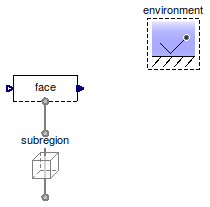
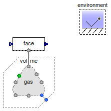
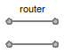
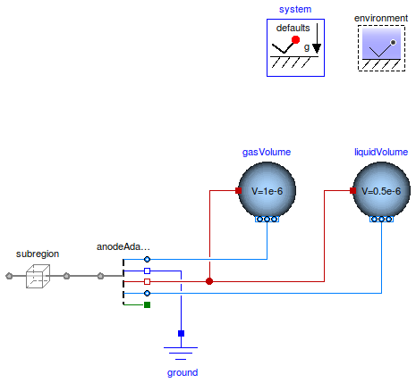

Table of Contents
- User's Guide
- Blocks
- Conditions
- Assemblies
- Regions
- Subregions
- Phases
- Species
- Connectors
- Characteristics
- Units
- Quantities
- Utilities
- Icons
Download
- Latest version (**Empty; please check back soon or contact kdavies4 at gmail.com.)
FCSys.Conditions.Examples
ExamplesInformation
Extends from Modelica.Icons.ExamplesPackage (Icon for packages containing runnable examples).Package Content
| Name | Description |
|---|---|
| Test the conditions for the face of a subregion | |
| Test the conditions for the face of a subregion with phases | |
| Test the Router model | |
| Test the Anode adapter |
 FCSys.Conditions.Examples.FaceCondition
FCSys.Conditions.Examples.FaceCondition
Test the conditions for the face of a subregion
Information
Extends from Modelica.Icons.Example (Icon for runnable examples).
Modelica definition
model FaceCondition "Test the conditions for the face of a subregion" extends Modelica.Icons.Example; ByConnector.Face.Single.FaceEfforts face; Subregions.Subregion subregion( L={1,1,1}*U.cm, inclFacesX=false, inclFacesY=true, inclFacesZ=false, inclTransX=false, inclTransY=true, graphite('inclC+'=true, 'C+'(V_IC=0.5*U.cc)), gas(inclH2O=true)); inner Conditions.Environment environment; equation connect(subregion.yPositive, face.face); end FaceCondition;
FCSys.Conditions.Examples.FaceConditionPhases
Test the conditions for the face of a subregion with phases
Information
Extends from Modelica.Icons.Example (Icon for runnable examples).
Parameters
| Type | Name | Default | Description |
|---|---|---|---|
| Geometry | |||
| Length | L[Axis] | ones(3)*U.cm | Length [l] |
| Assumptions | |||
| Axes with translational momentum included | |||
| Boolean | inclTransX | false | X |
| Boolean | inclTransY | true | Y |
| Boolean | inclTransZ | false | Z |
| Axes with faces included | |||
| Boolean | inclFacesX | false | X |
| Boolean | inclFacesY | true | Y |
| Boolean | inclFacesZ | false | Z |
Modelica definition
model FaceConditionPhases "Test the conditions for the face of a subregion with phases" import FCSys.Utilities.cartWrap; import FCSys.Utilities.countTrue; import FCSys.Utilities.enumerate; import FCSys.Utilities.index; extends Modelica.Icons.Example; // Geometric parameters inner parameter Q.Length L[Axis](each min=Modelica.Constants.small) = ones(3)* U.cm "Length"; final inner parameter Q.Volume V=product(L) "Volume"; // Included components of translational momentum parameter Boolean inclTransX=false "X"; parameter Boolean inclTransY=true "Y"; parameter Boolean inclTransZ=false "Z"; // Included faces parameter Boolean inclFacesX=false "X"; parameter Boolean inclFacesY=true "Y"; parameter Boolean inclFacesZ=false "Z"; ByConnector.FaceBus.Single.Phases.Gas face(inclH2O=true, H2O(redeclare Conditions.ByConnector.Face.Single.Thermal.HeatRate thermal, redeclare Conditions.ByConnector.Face.Single.Material.Current material(source(y=U.A)))); FCSys.Conditions.ByConnector.Amagat.Volume volume(n_phases=1); FCSys.Phases.Gas gas( inclH2=false, inclH2O=true, final n_faces=n_faces, T_IC=environment.T, reduceThermal=false, H2O(T_IC=300*U.K)); inner Conditions.Environment environment; protected final inner parameter Q.Area A[Axis]={L[cartWrap(axis + 1)]*L[cartWrap(axis + 2)] for axis in Axis} "Cross-sectional areas"; final inner parameter Boolean inclTrans[Axis]={inclTransX,inclTransY, inclTransZ} "true, if each component of translational momentum is included"; final inner parameter Boolean inclFaces[Axis]={inclFacesX,inclFacesY, inclFacesZ} "true, if each pairs of faces is included"; final inner parameter Boolean inclRot[Axis]={inclFacesY and inclFacesZ, inclFacesZ and inclFacesX,inclFacesX and inclFacesY} "true, if each axis of rotation has all its tangential faces included"; final inner parameter Integer n_trans=countTrue(inclTrans) "Number of components of translational momentum"; final inner parameter Integer n_faces=countTrue(inclFaces) "Number of pairs of faces"; final inner parameter Integer cartTrans[n_trans]=index(inclTrans) "Cartesian-axis indices of the components of translational momentum"; final inner parameter Integer cartFaces[n_faces]=index(inclFaces) "Cartesian-axis indices of the pairs of faces"; final inner parameter Integer transCart[Axis]=enumerate(inclTrans) "Translational-momentum-component indices of the Cartesian axes"; final inner parameter Integer facesCart[Axis]=enumerate(inclFaces) "Face-pair indices of the Cartesian axes"; equation connect(gas.yPositive, face.face); connect(volume.dalton[1], gas.dalton); end FaceConditionPhases;
FCSys.Conditions.Examples.Router
Test the Router model
Information
Extends from Modelica.Icons.Example (Icon for runnable examples).
Modelica definition
model Router "Test the Router model" extends Modelica.Icons.Example; // TODO: Make this into a meaningful example. Conditions.Router router; end Router;
FCSys.Conditions.Examples.AnodeAdapter
Test the Anode adapter
Information
Extends from Modelica.Icons.Example (Icon for runnable examples).
Modelica definition
model AnodeAdapter "Test the Anode adapter" extends Modelica.Icons.Example; inner Modelica.Fluid.System system(T_ambient=293.15 + 5); inner Conditions.Environment environment(T=350*U.K); FCSys.Subregions.SubregionNoIonomer subregion( L={1,1,1}*U.cm, inclFacesY=false, inclFacesZ=false, gas(inclH2=true, inclH2O=true), graphite('inclC+'=true, 'incle-'=true), liquid(inclH2O=true)); Adapters.MSL.Anode anodeAdapter(redeclare package LiquidMedium = Modelica.Media.CompressibleLiquids.LinearColdWater); Modelica.Electrical.Analog.Basic.Ground ground; Modelica.Fluid.Vessels.ClosedVolume gasVolume( use_portsData=false, nPorts=1, V=1e-6, use_HeatTransfer=true, redeclare Modelica.Fluid.Vessels.BaseClasses.HeatTransfer.IdealHeatTransfer HeatTransfer, redeclare package Medium = Adapters.Media.AnodeGas, medium(p(fixed=true),X(each fixed=true))); Modelica.Fluid.Vessels.ClosedVolume liquidVolume( nPorts=1, use_HeatTransfer=true, redeclare Modelica.Fluid.Vessels.BaseClasses.HeatTransfer.IdealHeatTransfer HeatTransfer, V=0.5e-6, use_portsData=false, redeclare package Medium = Modelica.Media.CompressibleLiquids.LinearColdWater, medium(p(fixed=true),T(fixed=true))); equation connect(ground.p, anodeAdapter.pin); connect(subregion.xPositive, anodeAdapter.face); connect(gasVolume.heatPort, anodeAdapter.heatPort); connect(gasVolume.ports[1], anodeAdapter.gasPort); connect(liquidVolume.heatPort, anodeAdapter.heatPort); connect(anodeAdapter.liquidPort, liquidVolume.ports[1]); end AnodeAdapter;